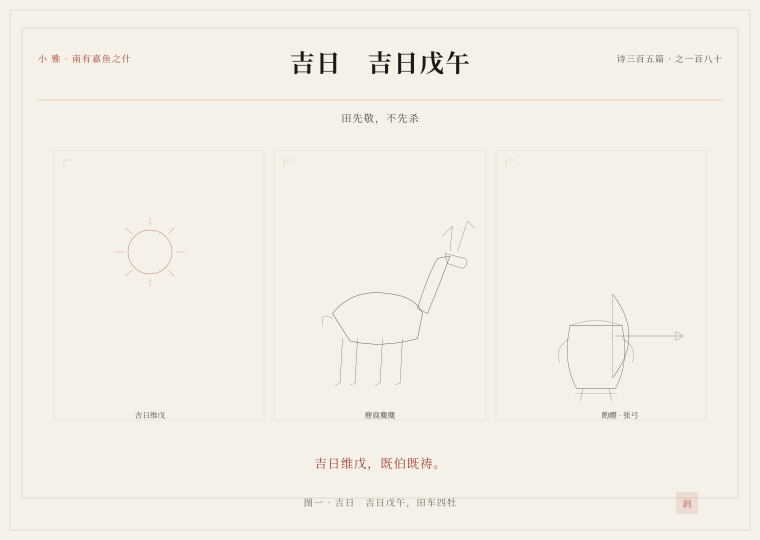
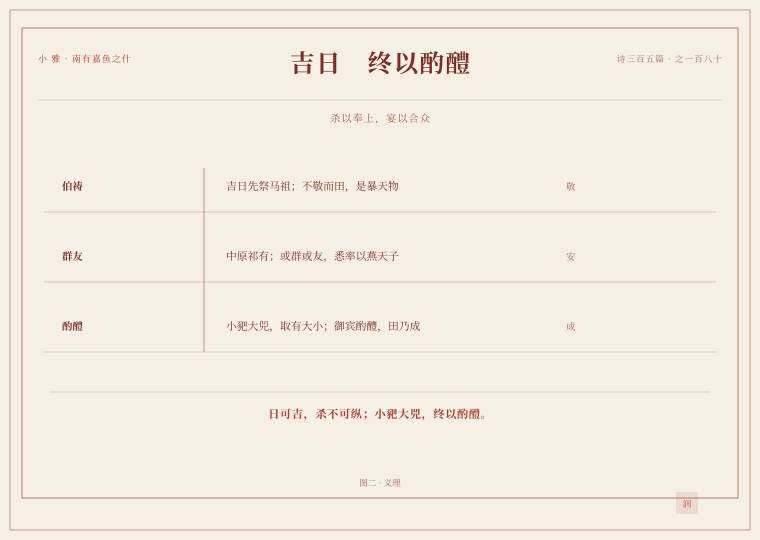

第一百八十篇 吉日
小雅 · 南有嘉鱼之什 SJ180
朗读 · 普通话
依经文原文朗读，章次不读出；配古琴底乐，不改速、不加拖腔。全库同一音色（豆包 TTS），非播音员录制。
一 解题
诗三判：
- 谁在说：叙宣王田猎之人。吉日维戊，既伯既祷；田车既好，四牡孔阜。
- 说什么事：四章。前二章择日、祷马、选马、逐兽；三章写中原群兽；四章写发矢、殪兕、酌醴。
- 为何编在此：车攻东狩，吉日西狩；一东一西，一礼一敬。
南有嘉鱼之什至此终，小雅田猎之礼全。
《毛序》：「《吉日》，美宣王田也。能慎微接下，无不自尽以奉其上焉。」
朱子《诗集传》：「赋也。吉日，谓戊日也。伯，马祖也。祷，祷也。田车，猎车。阜，大。群丑，兽众也。」二章：「庚午，亦吉日也。差，择也。同，聚也。麀鹿，牝鹿。麌麌，众也。漆沮，二水名。天子之所，天子田猎之所。」三章：「祁，大。有，多。儦儦，趋貌。俟俟，行貌。群，三兽；友，二兽。悉率，尽率。燕，安也。」四章：「张，张弓。挟，挟矢。豝，牝豕。殪，死。兕，野牛。御，进。醴，甜酒。」
本库的看法：《吉日》不是一首猎兽诗，是一首「以择日敬神起田」的诗。
吉日维戊，先伯祷；吉日庚午，先差马；然后升阜、逐兽、张弓、殪兕，终以「御宾客，酌醴」：田猎之终，不是杀，是宴。
小豝、大兕，取之以礼；酌醴，成之以乐。须辨：伯是马祖，不是伯父；祷是祷马，不是祷雨；群丑是兽众，不是丑类；麌麌是众多，不是麋麌；儦儦俟俟是趋行，不是儦俟人名；小豝是小母猪，不是小豝县。断语：日可吉，杀不可纵；小豝大兕，终以酌醴。
先辨五事：「伯」是马祖，不是伯父；「祷」是祷马，不是祷雨；「群丑」是兽众，不是丑类；「麌麌」是众多，不是麋鹿；「豝」是小母猪，不是地名。
二 经文
第一章
吉日维戊，既伯既祷。田车既好，四牡孔阜。
升彼大阜，从其群丑。
第二章
吉日庚午，既差我马。兽之所同，麀鹿麌麌。
漆沮之从，天子之所。
第三章
瞻彼中原，其祁孔有。儦儦俟俟，或群或友。
悉率左右，以燕天子。
第四章
既张我弓，既挟我矢。发彼小豝，殪此大兕。
以御宾客，且以酌醴。
三 韵读
- 一章：戊、祷、阜、丑，幽部相叶。声敬。
- 二章：午、马、同、麌、所，鱼部相叶。声聚。
- 三章：原、有、俟、友、子，之部相叶。声安。
- 四章：矢、豝、兕、醴，脂、微相叶。声成。
读法：一章敬，二章聚，三章安，四章成。由敬而聚，由聚而安，由安而成。
田猎之序，尽在四章。
四 字义与名物
- 吉日：吉善之日。维戊：在戊日。伯：马祖。祷：祷马。田车：猎车。阜：大。群丑：兽众。
- 庚午：庚午日。差：择。同：聚。麀鹿：母鹿。麌麌：众多。漆沮：二水名。天子之所：天子田猎之所。
- 中原：原中。祁：大。有：多。儦儦：趋貌。俟俟：行貌。群：三兽。友：二兽。悉率：尽率。燕：安。
- 张：张弓。挟：挟矢。豝：牝豕。殪：死。兕：野牛。御：进。醴：甜酒。
五 今译
一章：吉日在这戊日，既祭马祖又祷告。猎车既好，四牡甚大。登上大阜，追逐兽众。
二章：吉日在庚午，既择我马。兽所聚集，母鹿众多。沿漆沮而行，是天子田猎之所。
三章：瞻望中原，其大而多。儦儦趋，俟俟行，或三成群，或二为友。尽率左右，以安天子。
四章：既张我弓，既挟我矢。发那小母猪，死这大野牛。以进宾客，且以酌甜酒。
六 章旨
- 一章：吉日戊，是「择时」；伯祷，是「敬神」；升阜从兽，是「始田」；田先敬，不先杀。
- 二章：吉日庚午，是「再择」；差马，是「选」；麀鹿麌麌，是「兽聚」；马不选，则田不成。
- 三章：中原祁有，是「地广」；群友，是「兽序」；燕天子，是「安」；田以安上，不以暴下。
- 四章：张弓挟矢，是「射」；小豝大兕，是「获」；御宾酌醴，是「礼」；获而能宴，是田之成。
七 诗教
- 田先敬神：吉日、伯祷、差马，皆在杀前；不敬而田，是暴天物。
- 取有大小：小豝、大兕，各取其分；不取小，不尽大，是节。
- 终以酌醴：田猎不以杀终，以宴终；杀以奉上，宴以合众。
八 分寸与边界
- 不把「伯」读成伯父：伯是马祖；读成伯父，则「祷」成家祷。
- 不把「祷」读成祷雨：祷是祷马；读成雨，则田猎成求雨。
- 不把「群丑」读成丑类：群丑是兽众；读成丑，则「从」成从恶。
- 不把「麌麌」读成麋鹿：麌麌是众多；读成麋，则「麀鹿」重出。
- 不把「豝」读成地名：豝是小母猪；读成地名，则「发彼」无兽。
九 存疑
- 诗旨：毛序「美宣王田」，朱子从之；一说「美宣王能慎微接下」。本库从田礼，兼取慎微。
- 「伯」：毛传「马祖也」；从马祖。
- 「群」：毛传「三曰群，二曰友」；从三二。
- 「兕」：野牛；从野牛，不坐实犀。
- 「醴」：甜酒；从甜酒。
十 跨典
- 《诗经·小雅·车攻》「大庖不盈」；此篇「小豝大兕」，同是节取。
- 《礼记·月令》「季冬，天子乃厉饰，执弓挟矢以猎」；此篇吉日田猎，是月令之礼。
- 《论语》「钓而不纲，弋不射宿」；此篇取有大小，是节。
十一 双卡与图
六对：
| 伯（马祖） |
伯（伯父） |
| 祷（祷马） |
祷（祷雨） |
| 群丑（兽众） |
群丑（丑类） |
| 麌麌（众多） |
麌麌（麋鹿） |
| 豝（小母猪） |
豝（地名） |
| 醴（甜酒） |
醴（醴泉） |

图一 · 吉日 吉日戊午，田车四牡

图二 · 吉日 小豝大兕，御宾酌醴